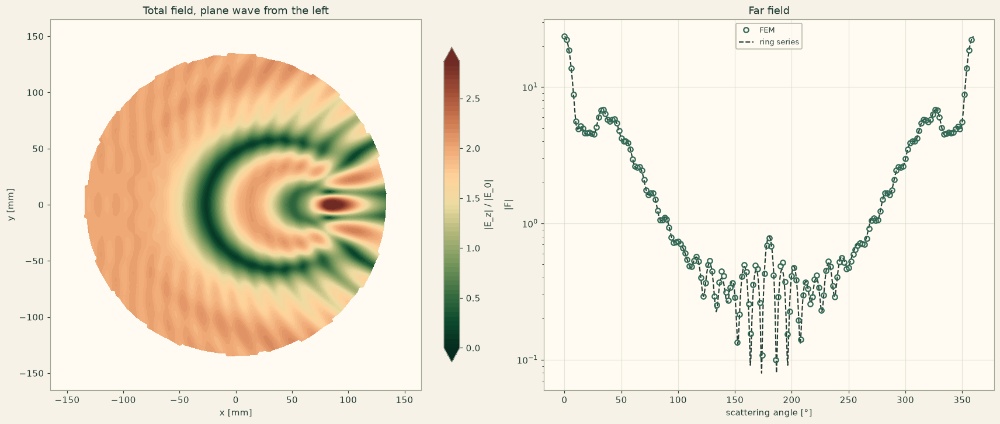

Docs › Examples › Luneburg lens with a mapped permittivity
Microwave optics · 2D
Luneburg lens with a mapped permittivity
A cylindrical lens whose permittivity falls from 2 at the centre to 1 at the rim focuses a plane microwave on the far side of its rim.
Run locally with OneSimulation. The example downloads are free. Running them requires an activated runtime. Runtime Alpha 0.2.1a8 · CPython 3.13 on macOS (Apple Silicon), Ubuntu 22.04 (x86-64), and Windows x64. Installation and activation · View pilot plans. Scope of the reference checks.


What it computes
OneSimulation reads the air and the lens from STEP files, cuts the plates at mid-depth and solves the scattered field of the plane wave in 2D with quadratic elements and a circular perfectly matched layer. The permittivity is one function of position, defined once on the unit disc and mapped onto the lens. The far field is compared with an exact series of the lens cut into 300 thin rings. The script that builds the STEP files comes with the notebook.
What it checks
The far field agrees with the ring series within 0.54 % of the forward peak and the scattering width within 1.1 %. The wave converges on the axis at x = 85 mm with 11 times the incident intensity, close to the rim at 90 mm that geometric optics predicts.
Geometry
Save the STEP files luneburg_lens_mapped_permittivity.step, luneburg_lens_mapped_permittivity_lens.step next to the notebook before running it.
The geometry script
The script luneburg_lens_mapped_permittivity_geometry.py builds the geometry with the CAD objects of OneSimulation and writes the files. Change a dimension there, run it, and run the notebook again.
"""Geometry of the OneSimulation example "Luneburg lens with a mapped permittivity".
Builds, as thin plates with the CAD objects of OneSimulation, the air around a cylindrical lens out to
a circle of radius 165 mm (luneburg_lens_mapped_permittivity.step, with the outer face named outer)
and the lens, a disc of radius 90 mm (luneburg_lens_mapped_permittivity_lens.step).
"""
from onesim.cad.d3 import Cylinder
lens, outer, thickness = 0.09, 0.165, 0.005
air = Cylinder(radius=outer, length=thickness)
air = air.grouped(outer=air.select(faces=lambda face: face.kind == "cylinder"))
air.save("luneburg_lens_mapped_permittivity.step")
Cylinder(radius=lens, length=thickness).save(
"luneburg_lens_mapped_permittivity_lens.step"
)The notebook
The complete notebook, cell by cell. Run it to produce the figures and the comparison printout.
A Luneburg lens has no surfaces to bend the light: its refractive index varies continuously, \(n(r)=\sqrt{2-(r/R)^2}\), from \(\sqrt2\) at the centre to 1 at the rim, so that it joins the surrounding air without reflection. Every ray of a parallel beam is bent on a curved path to the same point on the opposite rim. Lenses of this kind, made of foams or drilled plastics of graded density, serve as wide-angle microwave antennas and radar reflectors.
Here a cylindrical lens of radius \(R=90\) mm, three wavelengths at 10 GHz, is lit by a plane wave travelling along \(x\) with the electric field along the axis of the cylinder. The permittivity \(\varepsilon_r(x,y)=2-(x^2+y^2)/R^2\) is written as a function of position, defined once on the unit disc and mapped onto the lens by scaling with \(R\); MappedElectromagneticMaterial evaluates it at every quadrature point. OneSimulation solves the scattered field \(E_z\) with the incident wave as background field; a circular PML from 135 to 165 mm absorbs the outgoing wave.
| boundary | condition |
|---|---|
outer (\(r=165\) mm) | perfect conductor, scattered field, behind the PML |
The air comes from luneburg_lens_mapped_permittivity.step, the lens from luneburg_lens_mapped_permittivity_lens.step, written by luneburg_lens_mapped_permittivity_geometry.py with the CAD objects of OneSimulation.
Reference. (i) The exact scattered field of the lens cut into 300 thin homogeneous rings: in each ring \(E_z\) is a sum of Bessel functions \(J_m\) and \(Y_m\), and the continuity of \(E_z\) and \(\partial_rE_z\) carries the logarithmic derivative of every cylindrical harmonic \(m\) from the centre to the rim, where it gives the scattering coefficient \(s_m\) and the far field \(F(\varphi)=\sum_m s_m e^{\mathrm im\varphi}\) (Bohren and Huffman, Absorption and Scattering of Light by Small Particles, 1983, §8.4; Kerker, The Scattering of Light, 1969, ch. 6). (ii) Geometric optics puts the focus on the rim, at \(x=R\) (Luneburg, Mathematical Theory of Optics, 1964, §29).
import numpy as np
from onesim.cad.exchange import load
from onesim.materials import VACUUM_PERMEABILITY, VACUUM_PERMITTIVITY
from onesim.materials.electromagnetic import (
IsotropicElectromagneticMaterial,
MappedElectromagneticMaterial,
spherical_pml,
)
from onesim.meshing import TriangularMesher
from onesim.numerics import Numerics
from onesim.numerics.fem import FiniteElement, Lagrange
from onesim.numerics.linear import ComplexSparseDirect
from onesim.physics.electromagnetics import (
FrequencyDomainMaxwell,
PerfectElectricConductor,
far_field,
)
from onesim.simulation import Problem, Simulation
from onesim.visualization import plots, theme
from scipy.special import h1vp, hankel1, jv, jvp, yv, yvp
theme.set()
light = 1 / np.sqrt(VACUUM_PERMEABILITY * VACUUM_PERMITTIVITY)Geometry and mesh
section cuts the plates at mid-depth. Quadratic triangles of 3 mm in the air and 2 mm in the lens, about ten per wavelength in the densest part of the lens.
air, disc = load("luneburg_lens_mapped_permittivity.step"), load(
"luneburg_lens_mapped_permittivity_lens.step"
)
plane, lens = air.section((0, 0, 1), origin=(0, 0, 0.0025)), disc.section(
(0, 0, 1), origin=(0, 0, 0.0025)
).named("lens")
radius = lens.size[0] / 2
mesh = TriangularMesher(
target_size=0.003, embedded_regions=(lens,), region_sizes={"lens": 0.002}
).generate(plane)
fig = plots.figure(1, 2, size=(14, 6.5))
plots.geometry(
[air.named("air"), disc.named("lens")],
camera=plots.Camera(elevation=60, azimuth=-90),
title="Air and lens (STEP)",
ax=fig[0],
)
plots.mesh(
mesh,
groups=("all",),
legend=False,
title=f"{mesh.cell_count} quadratic triangles",
ax=fig[1],
)
plots.show()Model
The permittivity is defined on the unit disc, \(\varepsilon_r(\rho)=2-\rho^2\) for \(\rho<1\) and 1 outside, and mapped onto the lens with \(\rho=r/R\).
frequency = 10e9
k = 2 * np.pi * frequency / light
unit_disc = lambda rho: np.where(rho < 1, 2 - rho**2, 1.0)
medium = MappedElectromagneticMaterial(
relative_permittivity=lambda x, y, z: unit_disc(np.hypot(x, y) / radius)
)
incident = lambda x, y, z: np.column_stack((0 * x, 0 * x, np.exp(1j * k * x))).astype(
complex
)
model = FrequencyDomainMaxwell(
domain=plane.domain(),
frequency=frequency,
material=spherical_pml(medium, 0.135, 0.165),
polarization="Ez",
background_field=incident,
background_material=spherical_pml(IsotropicElectromagneticMaterial(), 0.135, 0.165),
phasor_convention="exp(-i*omega*t)",
amplitude_convention="peak",
)
result = Simulation(
problem=Problem(
name="Luneburg lens",
geometry=plane,
physics=(model,),
boundary_conditions=(
PerfectElectricConductor(
physics=model, boundary=plane.boundaries.outer, total_field=False
),
),
),
mesh=mesh,
numerics=Numerics(
spatial=FiniteElement(element=Lagrange(order=2)),
linear_solver=ComplexSparseDirect(),
),
).solve_stationary()Results
The series of the lens cut into 300 rings, carried from the centre outward one ring at a time; the far field of the FEM model on the circle of 120 mm; the intensity on the axis behind the lens.
orders = np.arange(-45, 46)
edges = np.linspace(0, radius, 301)
rings = np.sqrt(unit_disc(0.5 * (edges[:-1] + edges[1:]) / radius))
ratio = (
k
* rings[0]
* jvp(orders, k * rings[0] * edges[1])
/ jv(orders, k * rings[0] * edges[1])
)
for n, inner, outer in zip(rings[1:], edges[1:-1], edges[2:]):
beta = -(n * k * jvp(orders, n * k * inner) - ratio * jv(orders, n * k * inner)) / (
n * k * yvp(orders, n * k * inner) - ratio * yv(orders, n * k * inner)
)
ratio = (
n
* k
* (jvp(orders, n * k * outer) + beta * yvp(orders, n * k * outer))
/ (jv(orders, n * k * outer) + beta * yv(orders, n * k * outer))
)
series = -(k * jvp(orders, k * radius) - ratio * jv(orders, k * radius)) / (
k * h1vp(orders, k * radius) - ratio * hankel1(orders, k * radius)
)
angles = np.radians(np.arange(0, 360, 2.0))
pattern = far_field(result, model, angles, radius=0.12)
reference = np.exp(1j * np.outer(angles, orders)) @ series
width_fem = 2 / (np.pi * k) * np.sum(np.abs(pattern) ** 2) * np.radians(2.0)
width_series = 4 / k * np.sum(np.abs(series) ** 2)
x = np.linspace(-0.12, 0.13, 1001)
axis = (
np.abs(
result.field(model.electric_field).evaluate(np.column_stack((x, 0 * x)))[:, 2]
+ np.exp(1j * k * x)
)
** 2
)
print(
f"far field against the ring series: largest deviation {np.max(np.abs(pattern - reference)) / np.max(np.abs(reference)):.2%} of the forward peak, "
f"forward |F| {abs(pattern[0]):.3f} against {abs(reference[0]):.3f}"
)
print(
f"scattering width: FEM {1e3 * width_fem:.2f} mm, series {1e3 * width_series:.2f} mm ({width_fem / width_series - 1:+.2%})"
)
print(
f"focus on the axis at x = {1e3 * x[np.argmax(axis)]:.1f} mm with {axis.max():.1f} times the incident intensity; geometric optics: on the rim, x = {1e3 * radius:.1f} mm"
)Figure
Left: the total field \(|E_z|\) inside the PML; the wave converges on the rim opposite the incidence. Right: the far field of the FEM model against the ring series.
x, y = np.asarray(mesh.coordinates).T
cells = np.asarray(mesh.cells)
inside = np.hypot(x, y) <= 0.135
field = np.full(len(x), np.nan)
field[inside] = np.abs(
result.field(model.electric_field).evaluate(np.column_stack((x, y))[inside])[:, 2]
+ np.exp(1j * k * x[inside])
)
shown = cells[np.all(inside[cells[:, :3]], axis=1)]
fig = plots.figure(1, 2, size=(16, 6.5))
plots.heatmap(
1e3 * x,
1e3 * y,
field,
triangles=shown,
limits=(0, np.nanpercentile(field, 99.8)),
label="|E_z| / |E_0|",
xlabel="x [mm]",
ylabel="y [mm]",
title="Total field, plane wave from the left",
ax=fig[0],
)
fine = np.radians(np.linspace(0, 360, 721))
plots.line(
points={"FEM": (np.degrees(angles), np.abs(pattern))},
reference={
"ring series": (
np.degrees(fine),
np.abs(np.exp(1j * np.outer(fine, orders)) @ series),
)
},
scale="logy",
xlabel="scattering angle [°]",
ylabel="|F|",
title="Far field",
legend="upper center",
ax=fig[1],
)
plots.show()Going further
Replace the mapping by \(\varepsilon_r=(2-\rho^2)^{1/2}\) or add a loss through conductivity as a function of position. A plane wave from another direction focuses on the opposite rim just the same: the lens has no axis.